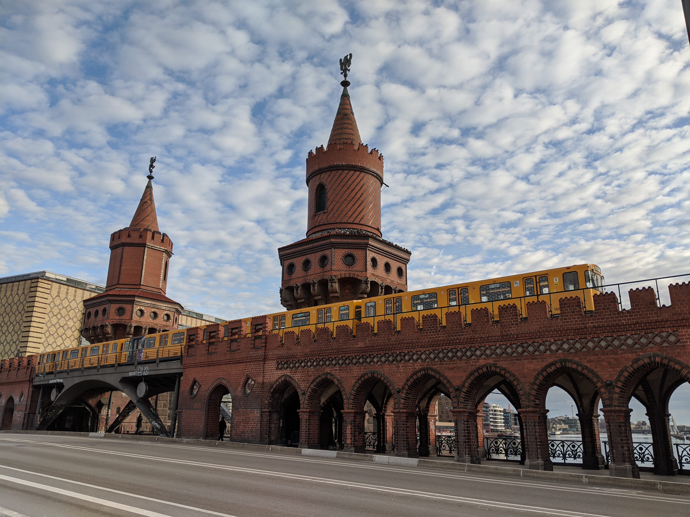

I started learning to code while I was working for a small
Biotech/Pharma startup in the Boston area, eager to find ways to
automate data processing and analysis. I enrolled in Codecademy’s Python course
and I started to really enjoy the logic it took to get tiny programs to run.
So I kept learning at home, enrolling in more courses (one in SQL, and another in data analysis).
At the end of the company’s two year funding cap, we were ultimately denied
further funding and we were all laid off. It was at that point that I decided
to take a risk and jump into what I’d been teaching myself at home for the
past year. I moved to Berlin and later Barcelona and took German language courses while
taking a course in C and building a web application with the Python-Flask framework. Since
then, I've been adding HackerRank solutions and other coding problems to my site to keep
progressing.
 Top photo: Oberbaum Bridge in Berlin, Germany, where I lived in Kreuzberg in the Fall of 2019.
Bottom photo: Collserola Park in Barcelona, Spain, where I lived in the Winter of 2019. I spent a good
deal of my time in coffee shops learning to program while living and traveling in Germany and Spain
from August of 2019 to March 2020.
Top photo: Oberbaum Bridge in Berlin, Germany, where I lived in Kreuzberg in the Fall of 2019.
Bottom photo: Collserola Park in Barcelona, Spain, where I lived in the Winter of 2019. I spent a good
deal of my time in coffee shops learning to program while living and traveling in Germany and Spain
from August of 2019 to March 2020.